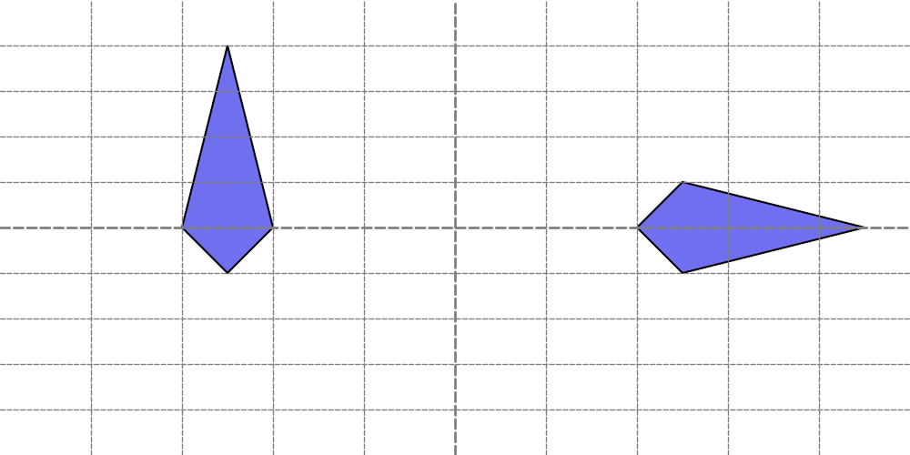

Drawing Shape
Drawlib provides 21 functions for drawing vector shapes, from basic circles and rectangles to directed block arrows and custom vector paths. These functions are categorized into three primary geometry types:
- Circle-like shapes (
xy,radius): Centered geometry defined by radius and angle spans. - Rectangle-like & planar shapes (
xy,width,height): Planar geometry centered atxywith dimensions and rotation. - Directed Block Arrows & Polygons: Straight and routed block arrows, multi-point polygons, and custom vector shapes.
Circle-like Shapes
Functions that draw circle-like shapes include:
circle(): Standard circledonuts(): Ring shape with outer radius and thicknessfan(): Circular sector between anglesregularpolygon(): Equilateral polygon with $N$ vertices (pentagon, hexagon, octagon)star(): Multi-pointed star with inner/outer radiiwedge(): Donut sector between angles
Rectangle-like & Planar Shapes
Functions that draw rectangle-like shapes include:
rectangle(): Standard rectangle with optional rounded corners (r)ellipse(): Oval shape with independent width and heightarc(): Planar pie-slice sector on an ellipseparallelogram(): Slanted parallelogramrhombus(): Diamond / rhombus shapetrapezoid(): Symmetric trapezoidtriangle(): Equilateral or oriented trianglechevron(): Arrowhead-shaped process block
Directed Block Arrows & Custom Paths
Functions for block arrows and complex paths include:
arrow(): Direct straight block arrow (xy1toxy2)arrow_l(): L-shaped right-angled block arrow (xy1toxy2)arrow_u(): U-turn block arrow (xy1toxy2)arrow_arc(): Circular arc block arrow (xy,width,height)arrow_polyline(): Multi-point routed block arrowpolygon(): Closed polygon connecting an arbitrary list of coordinate tuplesshape(): Custom vector polygon constructed from local path points
By default, all closed shapes are centered at their geometric center xy.
Alignment can be adjusted using style (text_halign and text_valign).
We'll discuss styling with Style on another page.
Text of Shapes
All shapes can have text at their center. Before diving into each shape, let's explain this common feature.
Shape functions can take these three optional arguments:
text: The text to display at the center of the shape.textsize: The font size of the text.textstyle: The style of the center text. You can configure the size and other properties here as well.
All of these arguments are optional. If you do not provide any value for text, no text will be shown. We recommend setting font size at textstyle rather than textsize.
Draw Other Type of Shapes
polygon()
The polygon() function draws a shape that connects specified points to form a polygon.
The start point and end point are automatically connected.
This function accepts the following arguments:
- xys: List of tuples specifying the points of the polygon [(x1, y1), (x2, y2), ..., (xn, yn)]
- style (optional): Style of the polygon
- text (optional): Centered text
- textstyle (optional): Style of the centered text
Let's explore an example:
from drawlib.canvas import config, save
from drawlib.shapes import polygon
from drawlib.text import text
config(width=100, height=50, grid_only=True)
polygon(xys=[(25, 20), (30, 25), (25, 45), (20, 25)])
polygon(xys=[(70, 25), (75, 20), (95, 25), (75, 30)], text="polygon()")
save()
Here is an example output:

polygon()
The polygon() function does not use an angle argument because the shape's orientation is determined by the order of the specified points.
If you prefer to draw shapes with a standard coordinate system and angle features, consider using the shape() function.
© 2026 drawlib by Yuichi Ito. Released under the Apache 2.0 License.